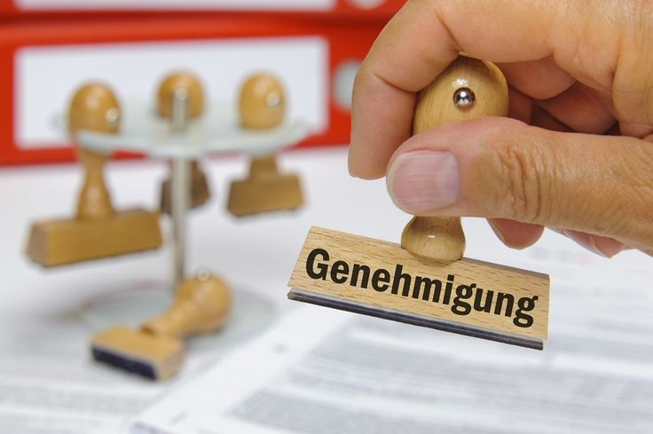
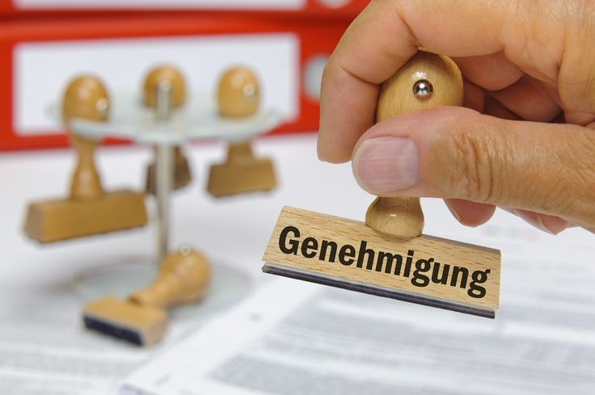
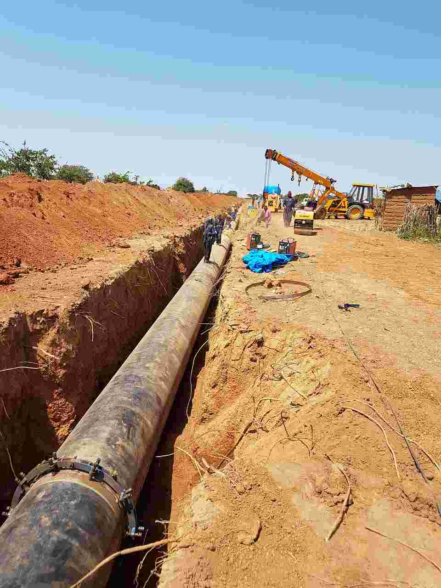
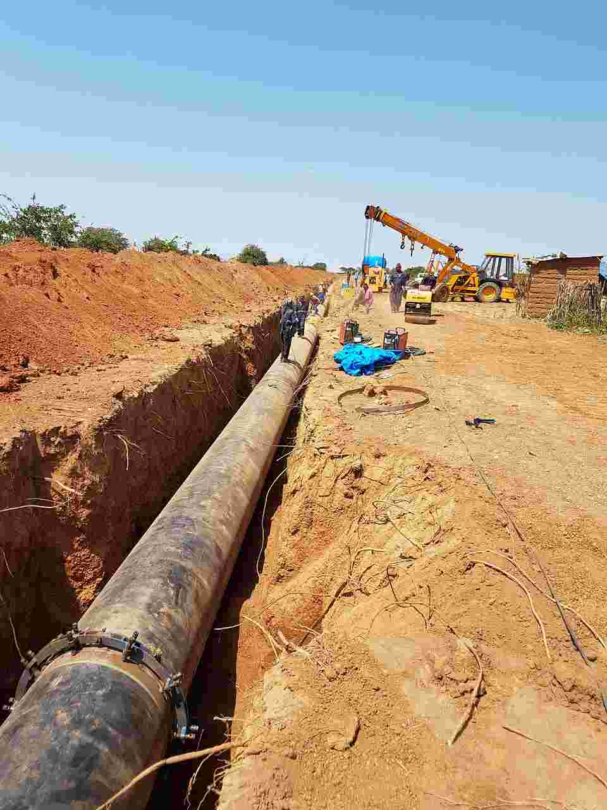
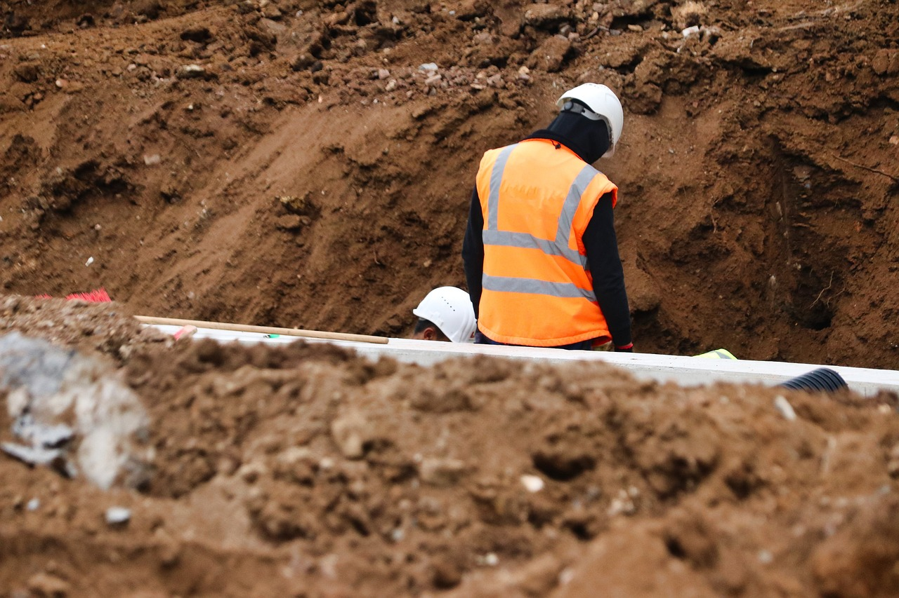
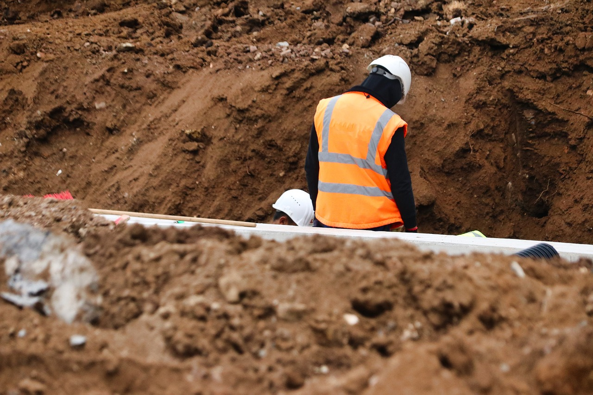

UNSERE LEISTUNGEN


 



 

 

ALTLASTEN
Erkundung, Bewertung und Sanierung von Altlasten auf Grundstücken – für sichere Bauprojekte und nachhaltigen Umweltschutz.
SCHADSTOFFE
Erfassung, Bewertung und Rückbau von Gebäudeschadstoffen – für gesunde Räume und sichere Sanierungen.
BODEN-
MANAGEMENT
Untersuchung, Bewertung und Steuerung von Bodenbewegungen – für effiziente Bauabläufe und rechtssichere Entsorgung.
GENEHMIGUNGS-
VERFAHREN
Beratung, Antragstellung und Begleitung bei allen umweltrelevanten Genehmigungen – wir lotsen Sie durch den Behördenprozess.
GEOTHERMIE
Planung, Genehmigung und Überwachung von Erdwärmeprojekten – für nachhaltige Energie aus dem Untergrund.
SiGe-KOORDINATION
Sicherheits- und Gesundheitsschutzkoordination auf Baustellen – für reibungslose Abläufe und den Schutz aller Beteiligten.